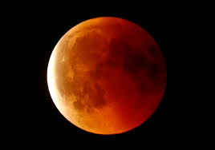
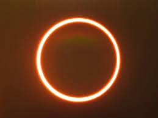
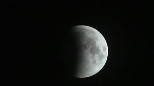
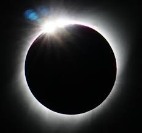
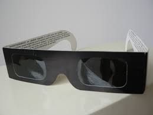
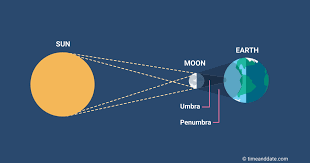

In a total solar eclipse, the Moon completely covers the Sun, casting a shadow on Earth and creating a brief period of darkness in the eclipse's path of totality. Observers within this path can witness the Sun's corona, the outermost layer of the Sun's atmosphere, glowing around the darkened Moon.

During a total lunar eclipse, the Earth's shadow, known as the umbra, completely covers the Moon. This causes the Moon to take on a reddish or coppery hue, often referred to as a "blood moon." The reddish color is due to sunlight bending and scattering as it passes through Earth's atmosphere and filtering onto the Moon's surface.

During a partial solar eclipse, only a portion of the Sun is covered by the Moon. This results in a partial dimming of sunlight but does not lead to total darkness. Partial solar eclipses are visible over a broader geographic area than total eclipses.

An annular solar eclipse occurs when the Moon is farther from Earth in its elliptical orbit, making it appear slightly smaller than the Sun. As a result, the Moon does not completely block the Sun's disk, leaving a bright ring or "ring of fire" around the edges of the Sun.

In a partial lunar eclipse, only a portion of the Moon enters the Earth's umbra, resulting in a partial darkening of the lunar surface. The rest of the Moon remains outside the shadow, illuminated by the Sun.

The diamond ring effect is a breathtaking moment during a total solar eclipse when a small part of the Sun's surface becomes visible just before or after totality, creating the appearance of a shining diamond ring with the corona.

Eclipse glasses are specialized eyewear designed to protect the eyes from the harmful rays of the Sun during a solar eclipse. They allow safe viewing of the eclipse and are essential for preventing eye damage.

The penumbra is the outer part of a shadow during an eclipse, where only a portion of the light source is blocked. It contributes to partial eclipses and results in a softer transition between light and shadow. The umbra is the central, darkest part of a shadow during an eclipse, where the entire light source is blocked. It creates the sharp boundary between light and shadow and is responsible for total eclipses.